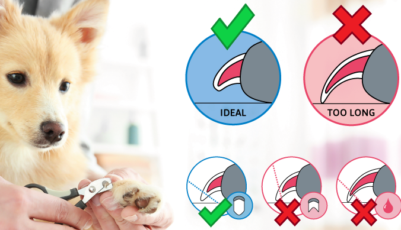

Benny was born 2021-02-03 in Höganäs, Sweden. He celebrated his first birthday in Malmö with cake. The cake was a special homemade dog-cake without any sugar. The recipe can be found here (make sure to use Google translate). Since he can eat yoghurt, the mashed potato topping can be made with regular yoghurt.
Benny loves to eat and would eat all the time if he could. To keep in shape and not get too fat, it is important to keep track of how much to eat. Follow the instructions on the dog-food package.
Dogs love structure and routines so it is good to try to make the days predictable. The morning walk should preferably be 40+ minutes since he has rested the whole night. When you come back, do some excersises (obedience, nosework) and a little play (can also be done outside) and feed him breakfast. Then he likes to rest and sleep. After optimally 4-5 hours, it's time for the lunch walk which can be shorter - especially if it is above 20 degrees, then keep it to max 20 minutes, he also likes to play during lunch. The dinner /evening walk should preferably be after 4-6 hours and can be approx 30-40 minutes. Then he can have dinner and you can do some activity with him. The last walk of the evening is his last opportunity to do his needs and can be kept short. Every day, he should be offered four walks to be able to pee and poop, have some mental stimulation (obedience, nosework, Kong etc) and get to play.
He should get food 2x a day and can get some treats in between. He can also get one chew-thing a day, which is good for his teeth.
Dogs can't take care of themselves so they need our help to do so.
The fur needs to be cleaned regularly with special dog shampoo, you can not use shampo for humans. If you find it difficult to notice when it is time, touching the fur and looking at your fingers is a good pointer, if you feel greasy and/or if your palm and fingers look dirty (grey) afterwards, it is time for a wash.
Another thing you need to do is to make sure that the fur doesn't get tangled. Dogs shed two times a year, at this time it is extra important to brush the dog every day to get rid of the extra hair.
The amount of time between nail trims depends on how quickly your dog's nails grow and how quickly they are worn down. The average dog should have his nails clipped every four weeks, but it should be done as often as needed to keep the nail from touching the ground when your dog is standing.
When dog nails get too long, it can lead to pain and other serious issues. Over time, your dog might develop spine and posture problems (like sitting or standing oddly) due to frequently shifting weight because of overgrown nails.